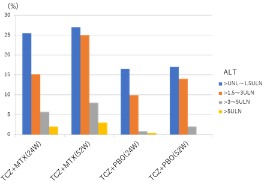
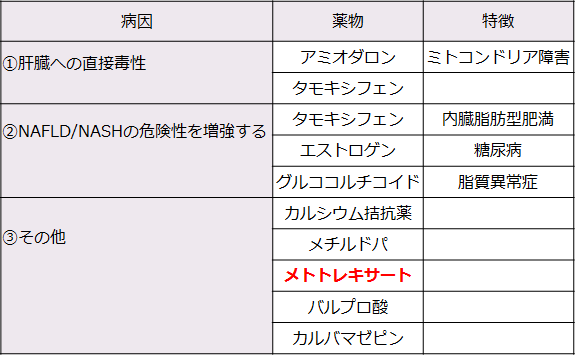

MTX併用による肝障害（肝機能値異常・NAFLD/NASH）
- ●TCZ+MTX併用療法は、TCZ単剤治療に比べ、肝機能値異常が起こりやすい（ACT-RAY試験など）
- ●MTXはNAFLD/NASH（ナッフルディー／ナッシュ）を起こしやすい薬剤として NAFLD/NASHガイドライン2014 に掲載されている
【ACT-RAY試験（有害事象：ALT）】

Dougados Met al. Ann Rheum Dis 73:803-809, 2014.
【NAFLD/NASH診療ガイドライン 2014】

MTXは肝障害を起こしやすい薬剤であることが明らかになっている
ACT+MTX併用時に肝機能異常が認められた際、減量・休薬すべきはMTXである